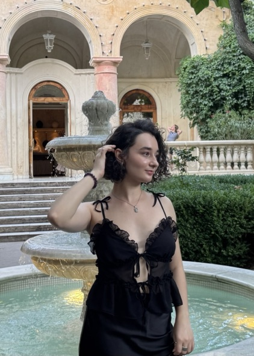

SPACEBRING ADMIN APP
2025
BASED IN ODESA, UKRAINE

INTRODUCTION
Hi! I'm Anna, a UI/UX designer creating digital products and websites. I enjoy finding the why behind every design decision and making things feel clear and easy to use.
Outside of design, I love collecting vintage finds, browsing old photographs, and traveling slowly. Those little moments keep me curious and help me notice details that often go unnoticed.
READ ABOUT →Case Studies
SCROLL TO EXPLORE MORE →
SPACEBRING ADMIN APP
2025
COWORKING BOOKING FLOW
2025
AURA DESIGN SYSTEM
2024